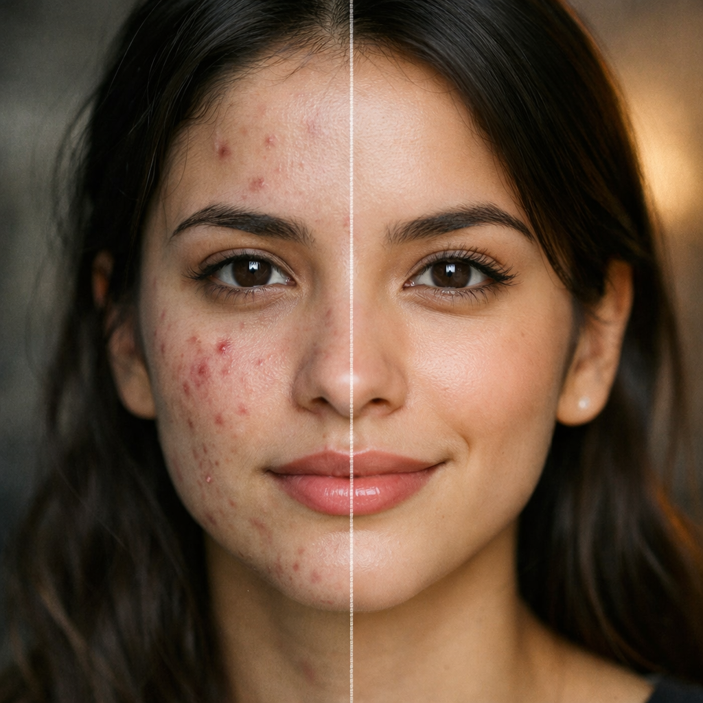
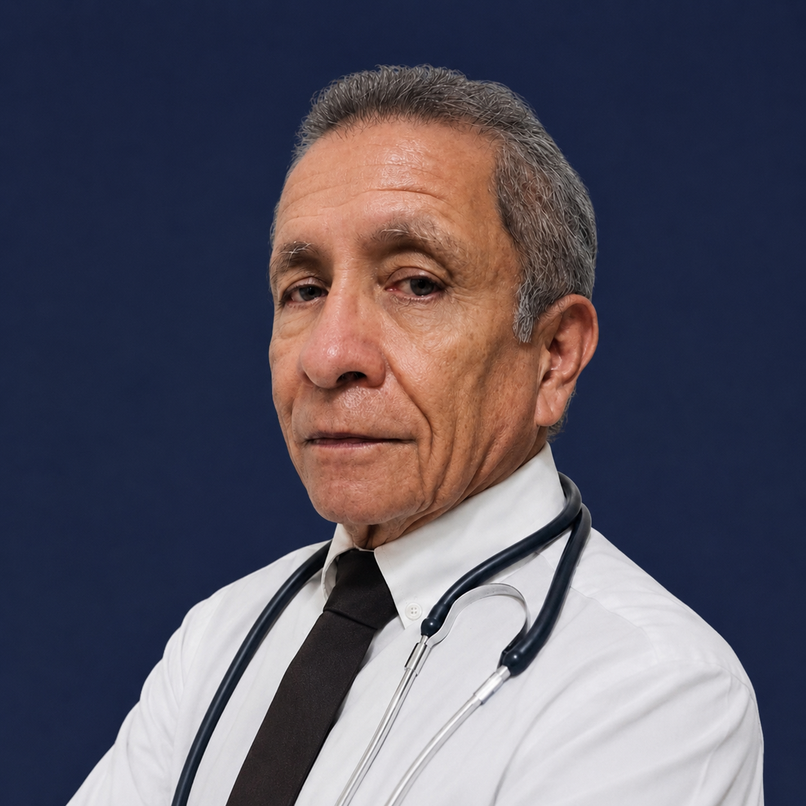
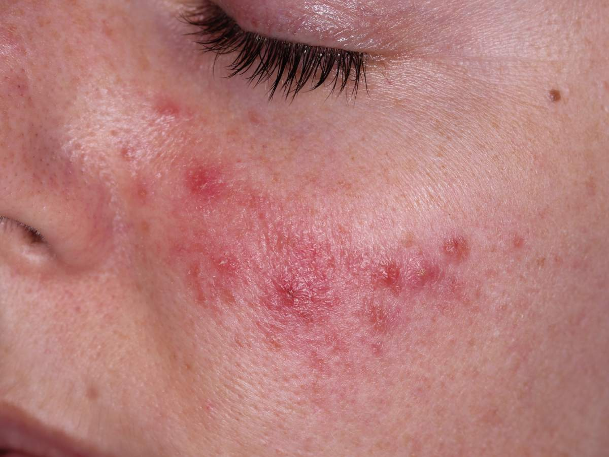
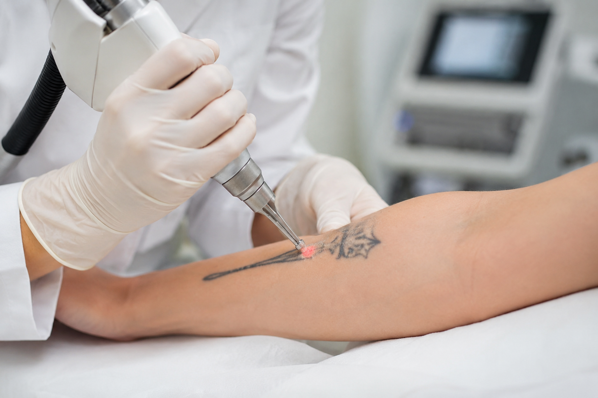

Tratamiento del Acné
Protocolos médicos personalizados para acné activo, quístico y hormonal. Limpiezas profundas, retinoides y terapias avanzadas.
Consulta tu CasoTratamiento especializado del acné, cuidado integral de la piel y estética facial en San Jacinto. Atención personalizada, con resultados visibles y un plan pensado para vos.

Soluciones profesionales para el acné, enfermedades de la piel, estética facial y eliminación de tatuajes. Atención en San Salvador, El Salvador.

Protocolos médicos personalizados para acné activo, quístico y hormonal. Limpiezas profundas, retinoides y terapias avanzadas.
Consulta tu Caso
Diagnóstico y tratamiento de dermatitis, psoriasis, rosácea, alopecia, hongos y otras enfermedades cutáneas comunes.
Consulta tu Caso
Botox, ácido hialurónico, bioestimuladores, peelings médicos y tratamientos de rejuvenecimiento facial con resultados naturales.
Reserva tu Cita
Tecnología láser avanzada para eliminar tatuajes de forma segura y progresiva, con el menor daño posible a la piel.
Escríbenos AhoraCombinamos experiencia clínica, tecnología actualizada y un trato cercano para que cada paciente reciba el mejor cuidado de su piel.
El Dr. Mario García es un especialista certificado en acné y cuidado de la piel, con amplia experiencia clínica en el diagnóstico y tratamiento integral.
Evaluación clínica completa con dermatoscopia y, cuando es necesario, biopsia para un diagnóstico certero.
Protocolos basados en evidencia médica, productos aprobados y equipos calibrados para tu tranquilidad.
Cada piel es única: diseñamos un plan a tu medida, con seguimiento cercano y ajustes según tu evolución.
En San Jacinto, San Salvador, con fácil acceso y ambiente privado para que te sientas cómodo/a.
Agenda tu cita en minutos escribiendo directamente al Dr. García. Respuesta rápida y sin compromiso.
El Dr. Mario García es un especialista dedicado al cuidado integral de la piel, con 30 años de experiencia clínica. Acompaña a cada paciente en su camino hacia una piel más sana, ofreciendo diagnósticos precisos y tratamientos personalizados para el acné, enfermedades cutáneas y estética facial.
Su enfoque combina ciencia médica, tecnología actualizada y una atención cálida y cercana, porque entiende que cada piel cuenta una historia distinta.
Historias reales de personas que recuperaron la salud y la confianza en su piel con el Dr. Mario García.
"Después de años luchando con el acné, encontré un tratamiento que realmente funcionó. El Dr. García me explicó cada paso y los resultados fueron notables."
"Atención profesional y muy cercana. Mi dermatitis mejoró notablemente desde las primeras semanas. Lo recomiendo totalmente."
"Me realizó un peeling médico y los resultados superaron mis expectativas. La piel luce más uniforme y luminosa. Excelente profesional."
Reservá tu valoración especializada con el Dr. Mario García por WhatsApp. Cupos limitados esta semana y atención personalizada.
Agendar Cita por WhatsAppLas respuestas a las preguntas más comunes de nuestros pacientes en El Salvador.
La forma más rápida es escribirnos por WhatsApp al +503 7002-2709. Te confirmaremos disponibilidad y los pasos a seguir para tu primera consulta con el Dr. Mario García.
El costo depende del tipo de acné, la severidad y el protocolo recomendado. En la primera consulta el Dr. García evaluará tu caso y te presentará un plan personalizado con su inversión. Escríbenos por WhatsApp para más detalles.
Recomendamos agendar cita previamente para brindarte una atención sin prisas. Sin embargo, puedes escribirnos por WhatsApp el mismo día y haremos lo posible por atenderte según disponibilidad.
Estamos en San Jacinto, San Salvador, El Salvador. Puedes ver la ubicación exacta en nuestro mapa de Google. Te enviaremos las indicaciones completas al confirmar tu cita por WhatsApp.
Aceptamos efectivo y las formas de pago más comunes en El Salvador. Confirma los detalles al momento de agendar tu cita por WhatsApp.
Sí. Utilizamos tecnología láser adecuada para reducir y eliminar tatuajes de forma progresiva y segura. El número de sesiones depende del tamaño, color y antigüedad del tatuaje.